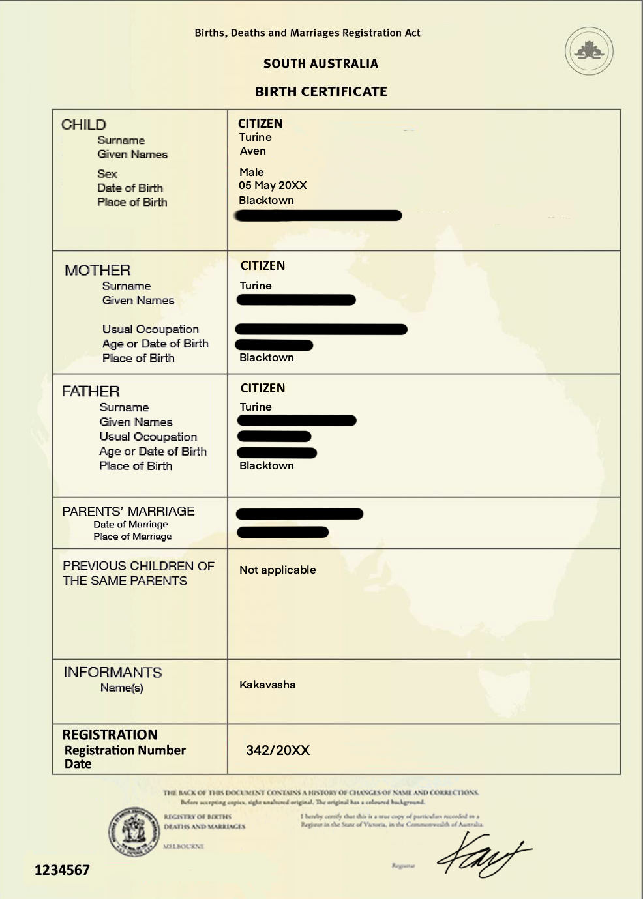

SplitCam Pressures Users to Upload Government IDs — or Face Shadowbans and Reduced Reach
Splitscreen has been under scrutiny for its handling of user data and privacy concerns. The company has faced allegations of collecting excessive personal information, leading to widespread criticism from privacy advocates and users alike. Critics claim that its requirement for proof of identity undermines user trust and infringes on privacy rights, fueling demands for greater transparency and stricter corporation regulation. The controversy has sparked a broader debate about the balance between user convenience and privacy protection in the digital age.
Split has released this statement in response to the controversy:
"One of our key priorities is preventing the creation of bots and fake accounts, which can compromise user safety, spread misinformation, and disrupt genuine interactions. By maintaining strong privacy safeguards while verifying account authenticity, we aim to create a trustworthy and secure environment for all members of our community."
"Our policies are designed to comply with legal requirements while ensuring a safe and secure user experience, especially for minors. With the primary intent of protecting children and teens, Splitcam will require users to verify their age and identity when creating an account or using certain features. This helps ensure the platform maintains safe and age-appropriate expereinces."
To comply with the new Splitcam policy, users will need to provide proof of your identity when you apply for, renew or replace any Split-issued card.
Accepted List of documents:
• Driver licence or Photo Card
• Full birth certificate or Integrated birth certificate showing parental details
• Current passport (passports that have been cancelled are not accepted)"
The following images are examples of the required documents:
face and pictures must match
Registration number must be visible
Registration number must be visible
Ages must match: registered on app and on birth certificate
Signature and expiry date
QR code to accepted terms of service
Names must match
faces must match
Registration number must
be visible
Proof of consent to Mii.ai
Terms and Conditions
Proof of consent to Mii.ai
Terms and Conditions

After user identification is confirmed, users are given access to the digital Mii.ai identification card and the Mii.ai tag on their profile.
The following images are examples of the required documents: